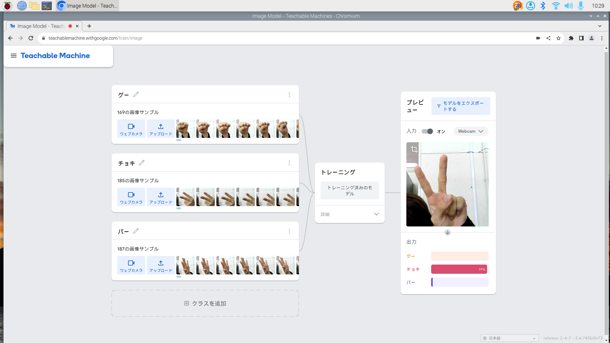
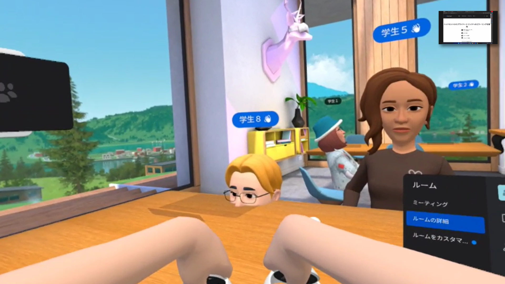

第2週目
2-1 １週目のレポートをHTMLで作る
１週目のレポート
1.内容
一週目で学習したサイエンスアートやゲーム，ホームページ作成などの内容を元に，
実習のまとめとして一週目のレポートを作成した．
2.感想
レポートをHTMLで作成するのは初めてだったが，自分なりのレポートを作成できたと思う．
brで改行するなど，HTMLの癖を使いこなせるようになりたいと思った．
2-2 機械学習体験

1.内容
Teachable Machine を用いて，たくさんの画像サンプルを撮影し，
それを学習させることで，カメラで示した手の形を
グー，チョキ，パーで見分ける体験を行った．
2.感想
オープンスクールの時を思い出す内容で，たったこれだけで見分けることが
出来てしまう機械学習が少し恐ろしいなと感じた．
また体験の際，自分のノートパソコンのカメラとUSBが反応しないトラブルがあった．
これは，自分がWindowsのアップデートを怠っていたためであった．
これからは反省して，定期的にアップデートの確認をするようにする．
そして，急にラズパイの準備をさせてしまって申し訳ございませんでした．
2-3 VR（バーチャルリアリティー：Virtual Reality）会議室の体験

1.内容
Meta Quest 2 を用いて，バーチャルリアリティの世界で会議室に入り，
そこでコミニュケーションをとったり，絵を書いたりする体験を行った．
2.感想
今までスマートフォンを用いたVRヘッドセットを体験したことがあったが，
本格的なヘッドセットは初めてで，没入感が比べ物にならないぐらいにあった．
バーチャルな空間に入ってそこで作業を行えるのは，やはり革命的であるのだと実感した．